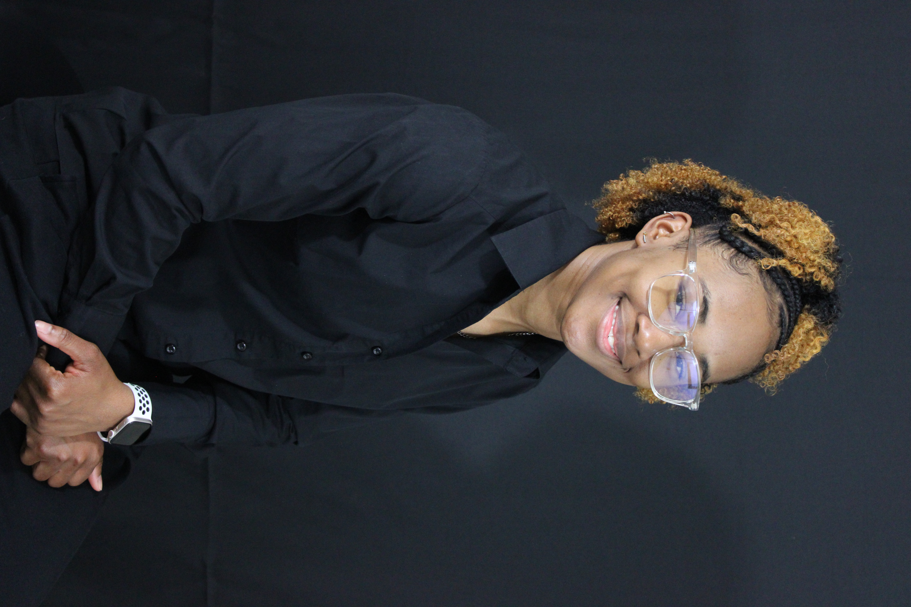
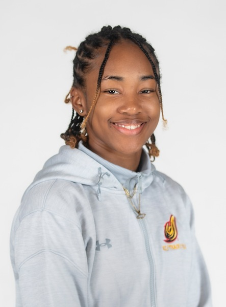
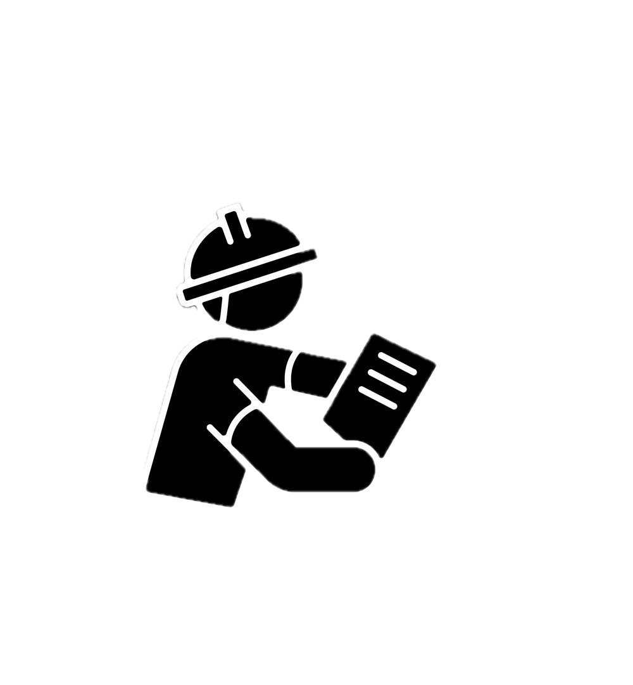

About Me

Welcome! I am a passionate Civil Engineering student dedicated to creating sustainable solutions.

Janel Baxter's
Education

Engineering Deans list:2023

Engineering Deans list:2024
- University of the District of Columbia (Expected 2026)
- Bachelor of Science in Civil Engineering
- Major: Civil Engineering
- GPA: 3.85

Experience
- Internship at ABC Construction Ltd.
- Research Assistant on Smart Cities Initiative.

Projects

Project 1: Green Building Design

Extracurricular Activities
- Member of the Civil Engineering Society
- Volunteer at Habitat for Humanity